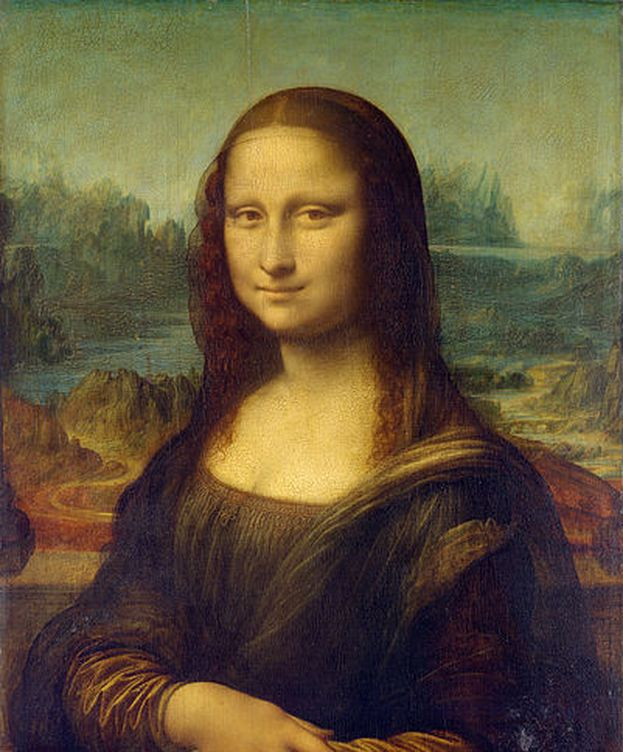
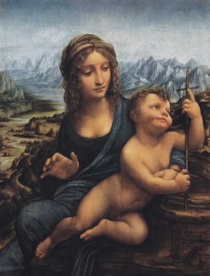
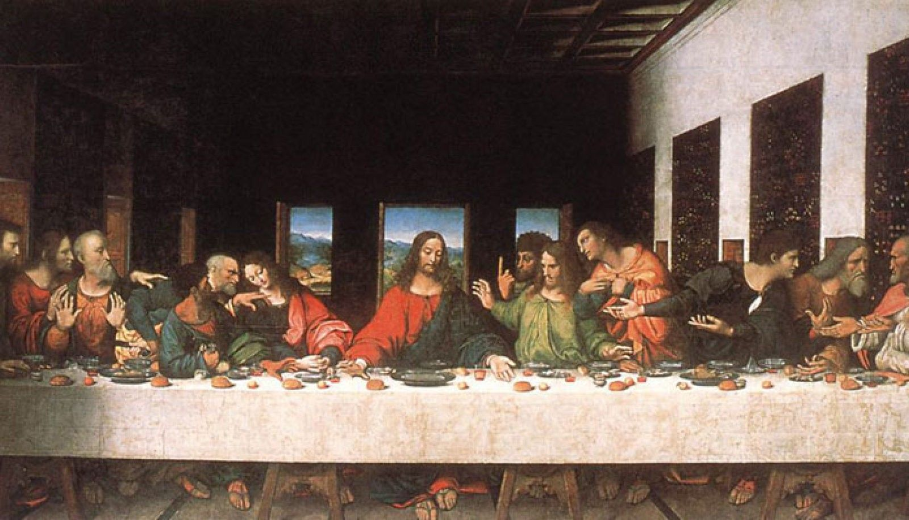

Leonardo da Vinci fue un polímata florentino del Renacimiento italiano.
Fue a la vez pintor, anatomista, arquitecto, paleontólogo, artista, botánico,
científico, escritor, escultor, filósofo, ingeniero, inventor, músico, poeta y urbanista.

Nacimiento: 15 de abril de 1452, Anchiano, Italia
Fallecimiento: 2 de mayo de 1519, Castillo de Clos-Lucé, Amboise, Francia
Períodos: Alto Renacimiento, Primer renacimiento, Renacimiento, Renacimiento italiano, Escuela florentina
Educación: Universidad de Florencia
Lugar de sepelio: Capilla de Saint-Hubert, Amboise, Francia
Serie: Virgen de la rueca, Leda y el cisne
Influenciado por: Verrocchio, Lorenzo de Médici, Juan Argirópulo
| PINTURA | NOMBRE |
|---|---|
|  | La Mona lisa, era la esposa de leonardo El retrato de Lisa Gherardini, esposa de Francesco del Giocondo. |
|  | Virgen de la rueca. también conocida como La Virgen del huso. |
|  | La Ultima cena. 1495 y 1498. Se encuentra en la pared sobre la que se pintó originalmente, en el refectorio del convento dominico de Santa Maria delle Grazie, |